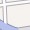

Panneau de configuration d’applications
Table des matières
- Panneau de configuration d’applications
La publication d’une application cartographique se fait à l’aide de 4 onglets de paramétrages distincts, chacune des parties correspondantes doit être correctement renseignée.
Note
Vous pouvez passer d’un onglet à un autre et effectuer des modifications à tout moment. Vos paramétres ne sont sauvegardés que lorsque vous cliquez sur le boutton “Publier”
Avertissement
Toute modification dans l’un des onglets nécessite la publication du projet (bouton “Publier”) pour être prise en compte par la carte publiée


{kind=link}
Configuration générale de l’application
Le premier onglet de paramétrage est ouvert par défaut au chargement du module. Les paramètres à renseigner sont listés dans le tableau ci-dessous.
| Paramètre | Définition |
| Nom du projet | Nom du projet enregistré dans le Module de création de cartes. (nom du mapfile) |
| Titre | Définit le titre utilisé dans l’application publiée |
| Droits d’accès | Définit les groupes d’utilisateurs ayant accès à l’application publiée |
| Thème | Définit le thème de l’application publiée |
| URL du projet | Affiche l’URL relative de l’application publiée |
| Carte active | Affiche le nom de la carte utilisée par l’application publiée |
| Date | Affiche la date et l’heure de publication de l’application |
| Langue | Définit la langue utilisée par l’application publiée |
| Mots-clés | Définit les mots clés de l’application par une liste de mots séparés par des virgules |
| Auteur | Définit le nom de l’auteur de l’application publiée |
| Copyright | Définit la valeur du copyright de l’application publiée |
| Description | Définit la description de l’application publiée |
Note
Les droits d’accès peuvent être attribués à plusieurs groupes en cliquant sur le bouton “Ajouter”.
Avertissement
L’utilisation du groupe “public” permet l’accès à l’application par n’importe quel internaute.
Note
Les droits d’accès peuvent être attribués à plusieurs groupes en cliquant sur le bouton “Ajouter”.
Note
Les paramètres Langue, Mots-clés, Auteur, Copyright et Description correspondent aux balises HTML metatags de l’application publiée.
Note
La description de l’application est utilisée dans l’interface publique. Vous pouvez l’éditez avec un éditeur rich-text. Pour plus d’information sur les fonctionnalités de l’éditeur, veuillez vous référer à la documentation de CKEditor [http://docs.cksource.com/Main_Page] .
Avertissement
Veuillez à renseigner tous les champs éditables.
Un apperçu du premier onglet de paramétrage est présenté ci-dessous.
{kind=link}
Configuration des couches de l’application
La troisième étape de la configuration d’une application consiste à paramétrer les différentes couches utilisées par la carte publiée. Les couches de fond (ou d’arrière plan) et les couches du projet sont paramétrables, comme indiqué dans cette section.
Couches de fond
Les couches de fond permettent d’afficher des tuiles provenant de serveurs tiers, mais aussi d’utiliser un projet créé dans le Module de création de cartes. Les différents paramètres disponibles sont listés ci-dessous.
| Paramètre | Définition |
| Default | Désigne la couche de fond affichée par défaut au chargement de l’application publiée |
| OpenStreetMap | Ajoute les tuiles OpenStreetMap comme couches de fond disponibles |
| MapQuest | Ajoute les tuiles MapQuest Open comme couches de fond disponibles |
| Ajoute les tuiles Google Maps comme couches de fond disponibles | |
| Bing | Ajoute les tuiles Microsoft Bing comme couches de fond disponibles |
| IGN | Ajoute les tuiles IGN Geoportail comme couches de fond disponibles |
| Created layers | Ajoute un projet MapMint comme couche de fond disponible (WMTS) |

Note
Cliquez en maintenant la touche Shift de votre clavier enfoncée pour sélectionner plusieurs couches de fond.
Couches de fond libres
La couche de fond OpenStreetMap utilise les tuiles du projet OpenStreetMap [http://www.openstreetmap.org] avec le style par défaut. leur utilisation est soumise aux termes et conditions [http://www.openstreetmap.org/copyright] d’OpenStreetMap.
Les couches de fond MapQuest Map et MapQuest Aerial utilisent l’Open JavaScript Maps API [https://developer.mapquest.com/web/products/open/map]. Leur utilisation est soumise aux termes et conditions [https://developer.mapquest.com/web/products/open/map#terms] de MapQuest.
| Icone | Paramètre | Définition |
| OpenStreetMap | Ajoute les tuiles OpenStreetMap comme couches de fond disponibles | |
| MapQuest Map | Ajoute les tuiles MapQuest Open comme couches de fond disponibles | |
| MapQuest Satelite | Ajoute les tuiles Google Maps comme couches de fond disponibles |
Couches de fond propriétaires
Les couches de fond Google Maps utilisent l’API Google Maps v3 [https://developers.google.com/maps/documentation/javascript/]. Leur utilisation est soumise aux termes et conditions [https://developers.google.com/maps/terms/] de Google Maps.
{kind=link}
{kind=link}
Les couches de fond Bing Maps utilise l’API Bing Maps [http://www.microsoft.com/maps/]. Leurs utilisations sont soumises aux termes et conditions [http://www.microsoft.com/maps/product/terms.html/] de Microsoft Bing.
| Icone | Paramètre | Définition |
|  | Bing Maps | Ajoute les tuiles Bing Maps comme couches de fond disponibles |
| Bing Satelite | Ajoute les tuiles Bing Satelite comme couches de fond disponibles | |
| Bing Hybrid | Ajoute les tuiles Bing Hybride comme couches de fond disponibles |
{kind=link}
{kind=link}
Les couches de fond IGN utilise l’API IGN Geoportail [http://api.ign.fr/services#web]. Leurs utilisations sont soumises aux termes et conditions [http://api.ign.fr/licences] de l’Institut Géographique National.
| Icone | Paramètre | Définition |
| Cartes | Ajoute les tuiles Cartes IGN comme couches de fond disponibles | |
| Photos aériennes | Ajoute les tuiles Photos aérienne IGN comme couches de fond disponibles |
{kind=link}
Couches de fond MapMint
Les cartes créées dans le Module de création de cartes sont listées dans la dernière liste déroulante du formulaire des couches de fonds.
Le choix d’une carte crée comme couche de fond entraine la création d’une pyramide de tuile de la carte (WMTS). La couche de fond sera ajoutée à la légende avec un icone généré automatiquement.
Couches du projet
Les couches utilisées dans la carte active sont listées dans un tableau situé dans la partie inférieure de la fenêtre. Utilisez les cases à cocher, les boutons radio et les listes déroulantes pour les paramétrer. Les différents paramètres sont listés dans le tableau ci-dessous.
| Paramètre | Définition |
| Vector | Définit la couche en mode Vecteur (WFS) |
| Raster | Définit la couche en mode Raster (WMS) |
| Activated | Définit si la couche est activée par défaut au chargement de l’application publiée |
| Acess | Définit les groupes d’utilisateurs autorisés à consulter la couche |
| MinZoom | Définit l’échelle d’affichage minimum de la couche |
| MaxZoom | Définit l’échelle d’affichage maximum de la couche |
| Popup | Définit l’ouverture d’une popup au survol des entités de la couche |
| Window | Définit l’ouverte d’une fenetre au clic sur les entités de la couche |
{kind=link}
Avertissement
Toute couche doit être paramétrée en mode Vecteur ou Raster.
Avertissement
Le mode vecteur est à utiliser uniquement pour les couches peu volumineuses (max 2Mo).
Avertissement
L’activation de Popups ou de Fenetres suppose que la couche ait été paramétrée comme requetable dans le Module de création de cartes.
Un apperçu du second onglet de paramétrages est présenté ci-dessous.

Paramétrage de la carte
Le troisième onglet de paramétrage de la publication d’une application permet de définir les propriétés d’affichage de la carte à publier ainsi que les options de présentation de l’application.
Paramétres de l’affichage de la carte
Cet partie spécifique permet de définir les propriétés de la carte à publier ainsi que le type d’affichage de l’application. Les différents paramètres à renseigner sont listés dans le tableau ci-dessous.
| Paramètre | Définition |
| Système de projection | Définit le système de projection affiché par l’outil de coordonnées du curseur |
| Méthode de rendu | Définit la méthode de rendue utilisée par la carte (SVG ou Canvas) |
| Unité de mesure | Définit l’unité de mesure affiche par les outils de mesure (metre|pied|degré) |
| Etendue par défaut | Définit l’étendue géographique de la carte par défaut au chargement de l’application publiée |
| Etendue minimum | Définit l’étendue géographique minimum de la carte de l’application publiée |
| Etendue maximum | Définit l’étendue géographique maximum de la carte de l’application publiée |
| Etendue restreinte | Définit l’étendue géographique maximum comme limite de la carte de l’application publiée |
Note
La liste déroulante de droite permet de remplir automatiquement les cases des coordonées à partir de l’étendue d’une couche du projet.
Paramétres de présentation de l’application
Cet partie spécifique permet de renseigner les champs qui sont listés dans le tableau ci-dessous.
| Paramètre | Définition |
| Famille de caractère | Définit la famille de caractère utilisée dans l’application publiée |
| Taille des caractères | Définit la taille de caractère utilisée dans l’application publiée |
| Couleur des caractères | Définit la couleur de caractère utilisée dans l’application publiée |
| Position du GC | Définit la position du Gestionnaire de Couche |
| GC | Définit si le Gestionnaire de Couche doit être ouvert ou non |
Les trois listes déroulantes permettent de modifier les propriétés CSS de base des caractères utilisée par l’application, telles que la famille de caractère (font-family), la taille générale de caractère (font-size) et la couleur de caractère (color).
Il n’est pas nécessaire de les modifier par défaut, et leur utilisation est prévue pour des cas spécifiques.
Avertissement
Gardez à l’esprit l’apparence finale de l’application avant d’utiliser les listes déroulantes et de modifier les propriétés des caractères. Il est conseillé de nes pas modifier l’apparence des caractères par défaut.
Configuration des fonctionnalités de l’application
La cinquième et dernière étape de la configuration d’une application consiste à paramétrer les fonctionnalités de la carte à publier. Les différentes fonctionalités disponibles sont listés dans les sections ci-dessous.
{kind=link}
Note
Cliquez en mainteant la touche Shift de votre clavier enfoncée pour sélectionner plusieurs fonctionnalités.
Outils de base
| Paramètre | Définition |
| Authentification | Affiche le formulaire de connexion |
| Partager un lien | Affiche le permalien et le permacode de la carte |
| Partager sur Twitter | Ouvre le permalien dans une popup Twitter |
| Partager sur Facebook | Ouvre le permalien dans une popup Facebook |
| Scroll | Zoome/Dézoome la carte avec la molette de la souris |
| Déplacer la carte | Déplace le centre de la carte par glissé deposé |
| Ma position | Centre la carte sur la position géographique du navigateur |
| Suivre ma position | Suit la position géographique du navigateur |
| Zoomer par sélection rectangulaire | Zoome la carte selon un rectangle défini par l’utilisateur |
| Zoomer sur l’étendue maximum | Zoome sur l’étendue géographique maximum |
| Afficher un profil d’altitude | Affiche le profil d’altitude d’une couche raster dans une fenêtre |
| Interroger une ou plusieurs couches par rectangle | Affiche les attributs d’une ou plusieurs couches dans une fenêtre |
| Interroger une ou plusieurs couches par cercle | Affiche les attributs d’une ou plusieurs couches dans une fenêtre |
| Mesurer de distance | Affiche le résultat d’une mesure de distance dans une fenêtre |
| Mesurer d’aire | Affiche le résultat d’une mesure d’aire dans une fenêtre |
| Imprimer la carte | Imprime la vue cartographique active dans un documnt PDF |
Avertissement
Les fonctionnalités d’interrogration par rectangle et d’interrogation par cercle impliquent que la/les couche vecteur ciblée ai été déclarée comme requetable dans le Module de création de cartes.
Avertissement
L’utilisation de la fonctionnalité de profil d’altitude implique que la couche raster ciblée ai été déclarée comme requetable dans le Module de création de cartes.
Autres outils
| Fonctionnalité | Définition |
| Carte d’aperçu | Affiche la carte d’aperçu |
| Déplacer et zoomer | Affiche un slider de zoom doté d’un joystick |
| Echelle | Affiche l’échelle de la carte |
| Moteur de recherche | Affiche le moteur de recherche d’entités |
| Position du curseur | Affiche les coordonnées du curseur au survol de la carte |
| Ajouter une couche | Affiche la liste des couches suplémentaires disponibles |
| Ajouter une couche WMS | Affiche la liste des couches WMS suplémentaires disponibles |
Avertissement
La fonctionnalité de moteur de recherche implique que la/les couche vecteur ciblée ai été déclarée comme requetable dans le Module de création de cartes.
Outils d’analyse spatiale
| Fonctionnalité | Définition |
| Frontières | Affiche les limites de l’entité sélectionnée |
| Zone tampon | Affiche la zone tampon de l’entité sélectionnée |
| Zone tampon avec masque | Affiche le masque de la zone tampon de l’entité sélectionnée |
| Centroïde | Affiche le centroide de l’entité sélectionnée |
| Envellope convexe | Affiche l’envellope convexe de l’entité sélectionnée |
| Requête spatiale | Affiche les entités résulant de la requête parmétrée |
| Simplification | Simplifie par suppression des noeuds de l’entité sélectionnée |
Avertissement
Les fonctionnalités d’analyse spatiale impliquent que la/les couche vecteur ciblée ai été déclarée comme requetable et que les propriétés correspondantes aient été renseignées dans le Module de création de cartes.
Publication de l’application
Une fois l’ensemble des paramétrages effectués, cliquez sur le bouton “Publier” dans la barre d’outil du panneau de configuration d’application.
Si un bandeau vert apparait en haut de l’écran, cela signifie que la publication s’est déroulé correctement. Vous pouvez consulter votre application dans un nouvel onglet de votre navigateur, avec l’adresse http://votre-instance.com/public/votreapplication.
Si un bandeau rouge apparait, veuillez vérifier l’ensemble des paramètres de la carte et de l’application puis recommencer.
Publication de la vignette
Le clic sur le bouton “Publier la vignette” entraine la création d’une image d’aperçu de la carte, utilisée dans l’interface publique de l’instance MapMint pour présenter le projet.
Note
Si l’apercu de la carte n’est pas publié, l’interface publique utilise une requête GetMap simple, ce qui implique un temps de chargement plus long.
Prévisualisation de l’application
Vous avez la possibilité de prévisualiser l’application à publier en cliquant sur le bouton “Prévisualiser”. Cela entraine l’ouverture de l’application dans un nouvel onglet de votre navigateur.
Supprimer l’application
Vous avez la possibilité de supprimer l’application publiée en cliquant sur le bouton “Prévisualiser”.